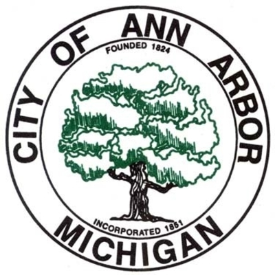
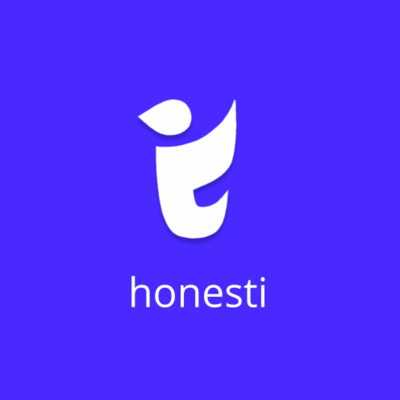

UX and Research Projects
SI 350: Field Research in the Public Sector
May 2019
I worked alongside other University of Michigan School of Information students to evaluate resilience and sustainability in the city of Ann Arbor, Michigan. We conducted multiple user interviews and synthesized the information using various UX methods such as affinity maps, personas, and spectrums. With our analysis, we created a comprehensive report with recommendations for the city, and was later also able to present to the Ann Arbor City Council.
Design Clinic: Mental Health and Wellness App
September 2020 - December 2020
I am currently evaluating the features and functionality of the mental health and wellness app, Honesti. As a UX researcher and designer for this project, I am exploring new features to help differentiate the app from current mental health resources by conducting a series of user testing methods such as user interviews, persona generation, and affinity maps. Analysis from this process will be used to revamp the current information architecture and design of the app through wireframing and prototyping.
Knoweldge Visualization
May 2019 - Current
As a lead researcher for a project team at UMSI, I have been tasked to develop an IRB-approved experiment in order to test the validity and efficiency of existing knowledge visualization platforms and designs. I will also be co-authoring an academic paper in regards to this project.
REU Intern
October 2020 - Current
Work In Progress